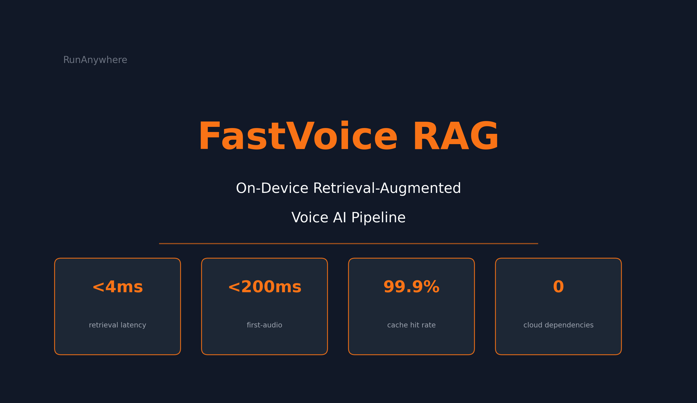

FastVoice RAG: Sub-200ms Voice AI with Retrieval-Augmented Generation, Entirely On-Device

Two days ago, we shipped FastVoice — a 63ms on-device voice AI pipeline. Today, we're giving it a knowledge base.
FastVoice RAG adds hybrid retrieval-augmented generation to our latency-optimized STT → LLM → TTS stack. The entire pipeline — including retrieval over 5,016 document chunks — runs on Apple Silicon with zero cloud dependencies.
The headline number: sub-200ms first-audio with full RAG retrieval. Here's how.
The Problem with RAG in Voice
RAG grounds LLM responses in external knowledge. It's standard practice in cloud-based chatbots. But voice AI has a constraint that chatbots don't: latency kills the conversation.
Research shows humans perceive conversational delays above 200–300ms. Cloud RAG pipelines (LlamaIndex, RAGFlow, PrivateGPT) routinely exceed 1–2 seconds for retrieval alone — before the LLM even starts generating.
We needed to answer: can you add RAG to a real-time voice pipeline without breaking the latency budget?
The Latency Decomposition
We instrumented every stage of the pipeline at microsecond resolution. Here's what we found:

Full Pipeline Breakdown (top-k=5)
| Stage | Latency | Notes |
|---|---|---|
| Query preprocessing | 0.003ms | Tokenization |
| Embedding (cached) | 0.015μs | 99.9% cache hit rate |
| Embedding (uncached) | 5.68ms | Snowflake Arctic Embed S, Q8_0 |
| HNSW vector search | 0.107ms | 384-dim, 5,016 chunks |
| BM25 lexical search | 0.018ms | Pre-computed IDF |
| RRF fusion | 0.001ms | Zero-allocation score buffers |
| Retrieval total | <4ms | Including embedding |
| LLM TTFT (no RAG) | 22.5ms | Baseline |
| LLM TTFT (with RAG) | 57.7ms | +157% from retrieved context |
| TTS first sentence | ~92ms | Piper, word-level flush |
The retrieval paradox: retrieval itself is negligible (<0.15ms without embedding). The real cost is LLM prefill — processing the retrieved chunks adds 157% to time-to-first-token.
But we have a solution for that.
The Architecture
FastVoice RAG extends our voice pipeline with a hybrid retrieval engine between STT and LLM.

Hybrid Retrieval Engine
We combine three retrieval methods via Reciprocal Rank Fusion (RRF):
| Method | What It Does | Latency |
|---|---|---|
| HNSW | Semantic vector search (384-dim) | 0.107ms |
| BM25 | Lexical keyword matching | 0.018ms |
| RRF Fusion | Combines rankings, k=60 | 0.001ms |
Both indexes are memory-mapped (mmap with MAP_PRIVATE, MADV_SEQUENTIAL) for near-instant startup and zero-copy access.
The fusion uses pre-allocated score buffers — one float per chunk in the corpus — with a touched_ vector that tracks which entries were modified. Between queries, only the touched entries are reset: O(candidates) instead of O(n_chunks).
On-Device Embedding
We use Snowflake Arctic Embed S (33M parameters, 384 dimensions, Q8_0 quantized) running via llama.cpp with Metal GPU offloading.
The embedding model and the LLM share Apple Silicon's unified memory through dual Metal GPU contexts — the embedding model (~33MB) coexists with the LLM without context switching overhead.
The Embedding Cache
Embedding is the most expensive retrieval operation at 5.68ms per query. For voice workloads, users often repeat or rephrase similar queries. We built a frequency-weighted LRU cache:

Eviction policy:
1score(e) = √frequency(e) / (1 + age_seconds(e))
The square root dampens frequency to prevent popular entries from being permanently pinned. The age term ensures stale entries eventually get evicted.
| Metric | Value |
|---|---|
| Hit rate | 99.9% |
| Hit latency | 0.015μs |
| Miss latency | 3.04ms |
| Speedup on hits | 255,000x |
| Storage | Pre-allocated contiguous float pool |
The cache uses a pre-allocated contiguous float[] pool of max_entries × dim with O(1) lookup via unordered_map. No allocation jitter. No cache-miss spikes.
The Top-k Tradeoff
More retrieved chunks means better grounding but higher LLM prefill cost. We swept top-k from 1 to 10:

| top-k | Retrieval | LLM TTFT | First-Audio | TTFT Growth |
|---|---|---|---|---|
| 1 | 5.92ms | 29.1ms | 159.8ms | baseline |
| 2 | 5.91ms | 31.8ms | 166.6ms | +9% |
| 3 | 2.61ms | 36.0ms | 159.6ms | +24% |
| 5 | 5.84ms | 57.7ms | 177.8ms | +98% |
| 7 | 4.05ms | 72.2ms | 175.9ms | +148% |
| 10 | 5.76ms | 110.0ms | 184.8ms | +278% |
Two things jump out:
- TTFT scales 3.8x from k=1 to k=10 — the LLM has to prefill all those extra context tokens
- First-audio only grows 16% over the same range — word-level flushing absorbs the TTFT increase
This is the key result. Word-level streaming flush, originally designed for bare LLM inference, becomes even more valuable when retrieval context inflates TTFT. The flushing mechanism decouples what the user hears from how much context the LLM processes.
Retrieval Mode Comparison
Is hybrid retrieval worth the extra cost over single-mode?

| Mode | Retrieval | TTFT | First-Audio |
|---|---|---|---|
| Hybrid (RRF) | 4.16ms | 55.0ms | 175.9ms |
| Vector only | 2.90ms | 55.2ms | 166.6ms |
| BM25 only | 2.66ms | 58.7ms | 191.7ms |
Hybrid adds 1.3–1.5ms over single-mode retrieval. The cost is dominated by the embedding computation, not the fusion logic. Vector-only offers a 7% first-audio advantage if you're willing to sacrifice lexical matching.
All three modes stay under 200ms first-audio.
How We Compare
We compared FastVoice RAG against every on-device or private RAG system we could find:
| System | Language | On-Device | Voice Integration | Cloud-Free | First-Audio |
|---|---|---|---|---|---|
| FastVoice RAG | C++ | Yes | Yes | Yes | <200ms |
| LlamaIndex | Python | No | No | No | N/A |
| RAGFlow | Python | No | No | No | N/A |
| PrivateGPT | Python | Partial | No | Partial | Multi-second |
FastVoice RAG is the only system that is fully on-device, written in C++, voice-integrated, and cloud-free.
What This Enables
Voice-First Knowledge Assistants
Ask your device questions about your documents — and hear the answer in under 200ms:
- Medical professionals: Query drug interactions, treatment protocols, patient histories — all on-device, fully HIPAA-compliant
- Legal research: Search case law and statutes by voice while reviewing documents
- Field engineers: Access equipment manuals and troubleshooting guides offline
Privacy-Critical RAG
The entire pipeline — embedding, retrieval, generation, and speech — runs locally:
- Sensitive corporate documents never leave the device
- No API keys, no usage logs, no third-party data processing
- Compliant by architecture, not by policy
Offline Knowledge Access
- Aircraft maintenance crews accessing technical manuals mid-flight
- Emergency responders querying protocols in connectivity dead zones
- Researchers working with classified or embargoed data
The Numbers That Matter
Retrieval Performance:
- <4ms total retrieval latency (hybrid, top-k=5)
- 0.015μs embedding cache hit latency (99.9% hit rate)
- 255,000x speedup on cache hits
- 0.001ms RRF fusion time
Pipeline Performance:
- <200ms first-audio with full RAG (top-k=5)
- 16% first-audio growth from k=1 to k=10 (word-level flushing)
- 3.8x TTFT growth absorbed by streaming
System Properties:
- 5,016 chunks indexed and searchable
- Zero cloud dependencies
- Zero allocations in the hot path
- Dual Metal GPU contexts for concurrent embedding + LLM
Summary
RAG doesn't have to be slow. RAG doesn't have to be in the cloud.
FastVoice RAG proves that hybrid retrieval-augmented generation can run in a real-time voice pipeline — entirely on-device — with first-audio latency under 200ms. The retrieval itself adds almost nothing. The LLM prefill cost is real, but word-level streaming flush absorbs it.
The architecture: memory-mapped zero-copy indexes, pre-allocated fusion buffers, frequency-weighted embedding cache, and dual Metal GPU inference — all composed into a single C++ binary on Apple Silicon.
No cloud. No network. No waiting.
Evaluated on Apple M3 Max, 36GB unified memory, macOS Sonoma. Corpus: 5,016 chunks from 1,030 CS documents. Models: Qwen3 0.6B Q4_K_M (KV cache Q8_0), Snowflake Arctic Embed S Q8_0, Piper Amy medium. STT: Streaming Zipformer via sherpa-onnx. File-mode benchmarks, 5 runs. Embedding cache: frequency-weighted LRU. Retrieval: BM25 + HNSW + RRF (k=60).